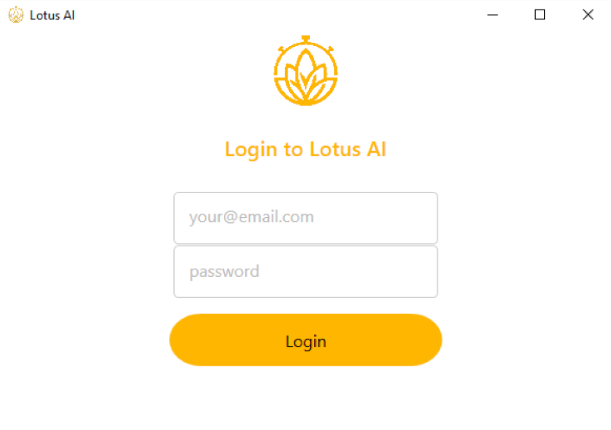

There's a few steps to follow when installing Lotus.ai
NOTE: During installation, a shortcut is created in your start-up folder. Each time you power on your computer the application will automatically start.
The first time you run the Agent you will need to login before it can start monitoring.

Enter your registered email and password.
After successful login you will see the following screen with your name.
There's nothing more you need to do.
The application will remember your login and automatically start with your profile each time you start your computer.
You can now use the “minimise” or “close” icons (top right corner) to minimise the application to your System Tray, as seen here:
Double-click the icon to show the main window again.
To exit the application and stop all monitoring, right click on the icon, and select the Exit option.
It may take a moment to close as it finishes synchronising your last activity with the Lotus AI server.